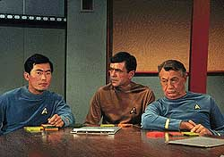
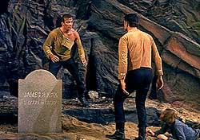
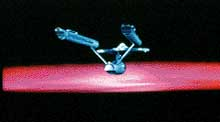
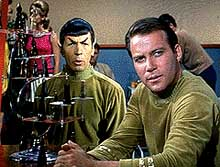

|
MANCHETE
DO EPISÓDIO
Episódio discute axioma "poder
absoluto corrompe absolutamente"
Episódio
anterior | Próximo episódio
Sinopse:
Data Estelar: 1312.4.
 Cem
anos atrás, a SS Valiant encontrou uma barreira de energia desconhecida
na borda da galáxia e algo fez com que seu capitão destruísse a própria
nave.
A USS Enterprise encontra o gravador de registros da Valiant, que revela
que antes da destruição, a tripulação procurava freneticamente nos
computadores toda e qualquer informação sobre percepção
extra-sensorial.
O capitão James Kirk decide descobrir o que aconteceu com a Valiant e
ordena que a Enterprise atravesse a barreira energética. Não só a
nave sofre avarias graves, como também alguns tripulantes. Kirk nota
uma forte mudança de personalidade em seu velho amigo, o tenente Gary
Mitchell, que adquiriu habilidades paranormais após o contato com a
barreira. A escalada de poderes de Mitchell foi progressiva. Em menor
grau, a dra. Elizabeth Dehner também foi afetada e passou a ter poderes
psicocinéticos.
Conforme os poderes de Mitchell aumentam, ele se torna mais perigoso.
Spock acredita que quando a Valiant passou pelo mesmo fenômeno, seu
capitão decidiu destruir a nave para evitar que algum tripulante com
esses poderes pudesse tomar conta da galáxia. Gary Mitchell confirma
seus temores ao declarar-se um deus que irá dominar os seres humanos.
Spock acredita que a morte de Mitchell é a única solução, mas Kirk
é incapaz de matar seu velho amigo.
Em vez disso, ele planeja abandonar Mitchell em um planeta desabitado,
Delta Vega. No entanto, quando chegam à superfície, Mitchell consegue
escapar, levando a dra. Dehner com ele. Kirk o segue com um rifle feiser
e Mitchell tenta matá-lo com seus poderes psicocinéticos.
Observando isso, a dra. Dehner percebe o quão desumano e perigoso
Mitchell se tornou e tenta ajudar Kirk a derrotá-lo. Sem remorso,
Mitchell mata Elizabeth Dehner. Antes que ele pudesse se fortalecer,
Kirk provoca uma avalanche com o rifle feiser, soterrando Mitchell.
Comentários:
"Where No Man Has Gone Before" é um episódio que
trata de um tema que seria recorrente em Jornada nas Estrelas:
o axioma "poder absoluto corrompe absolutamente".
 No
entanto, o maior destaque fica para a abordagem do tema, feita com
qualidade. A história busca evitar a todo custo o estigma "Mitchell
é o monstro da semana! Vamos acabar com ele!" para enfocar o
dilema do capitão no momento de escolher entre seu amigo e sua nave.
Neste dilema, a dra. Dehner e Spock fazem contraponto, equilibrando Kirk
entre eles. Neste episódio, a dra. Dehner fez um papel posteriormente
atribuído a McCoy, de fornecer ao capitão oposição a Spock.
Quanto ao drama pessoal de Mitchell, podemos dizer que o
tenente-comandante representa no nível do indivíduo um dilema vivido
por toda a humanidade. A grande questão proposta é: temos sabedoria
suficiente para controlar poderes capazes de ocasionar nossa própria
destruição?
Se para Mitchell, todo o problema era o seu alto nível de percepção
extra-sensorial, para a humanidade, a dificuldade é administrar o poder
de se construir bombas atômicas, de produzir alimentos transgênicos e
de alterar nosso próprio código genético. Levando a metáfora
adiante, vemos que o autor do episódio não guarda muita esperança ou
capacidade de transcendência para a humanidade (vide o triste fim do
amigo de Kirk).
 Do
ponto de vista técnico, o episódio mostra todas as qualidades que a
NBC queria para o segundo piloto de Jornada. O segmento
tem ação, emoção, aventura, sem se perder das qualidades do piloto
original.
Os cenários são um híbrido do que seriam pelo resto da série com os
resquícios deixados pelos tempos de Christopher Pike. Os uniformes
sofreram do mesmo fenômeno.
Os personagens ainda não mostram um alto grau de desenvolvimento, o que
seria apenas normal, devido ao pouco conhecimento da produção e dos
atores acerca de sua própria criação. Os melhores desenvolvimentos são
os de Scotty, que aparece pouco, mas quando surge na tela é
perfeitamente reconhecível como o engenheiro dos melhores momentos da Série
Clássica; Kirk, que é bem interpretado por William Shatner, mas ainda
sem todo o carisma que o marcaria nos episódios posteriores; e Spock,
que vai bem quando sua intervenção é essencial à história, mas é
fraco em momentos corriqueiros, que permitem que o vulcano sorria e
grite em algumas situações sem a menor justificativa.
 Os
personagens convidados (Dehner e Mitchell) mostram interpretações
extremamente convincentes. Destaque para Gary Lockwood que mostra de
forma impressionante a maldade e prepotência de Mitchell em Delta Vega.
Os efeitos especiais estão acima da média da série. Um orçamento
superior para o piloto é o responsável pela qualidade. A tomada usada
para mostrar a grande barreira que envolve a Via Láctea foi usada
diversas vezes na série.
Um fato que já começava a mostrar o potencial de Jornada para criar um
universo inteiro ao seu redor é a atenção dispensada pela produção
ao detalhe. É possível ler o histórico de Mitchell e Dehner na tela
da estação de ciências da ponte. Já no segundo piloto se via a
vontade de construir o rico background de Jornada.
Citações:
Mitchell - "Didn´t I say you´d
better be good to me?"
("Eu não disse que é melhor ser legal comigo?")
Dra. Dehner - "Don't you understand? A mutated, superior
man could also be a wonderful thing!"
("Vocês não entendem? Um mutante, um homem superior
poderia também ser algo maravilhoso!")
Trivia:
 Neste episódio vemos pela única vez na Série Clássica um
rifle feiser; a Enterprise não usa cristais de dilítio neste episódio,
e sim, cristais de lítio.
Neste episódio vemos pela única vez na Série Clássica um
rifle feiser; a Enterprise não usa cristais de dilítio neste episódio,
e sim, cristais de lítio.
Este episódio foi
produzido em 1965, como segundo piloto para a série.
Gary Lockwood (Mitchell)
é conhecido dos fãs de ficção científica, tendo protagonizado o clássico
"2001: Uma Odisséia no Espaço".
Neste episódio,
o nome de Kirk é grafado como James R. Kirk. Mais tarde, o
"R" viraria "T" e o nome do meio do capitão seria
estabelecido como Tiberius.
Ficha
técnica:
Escrito por Samuel A. Peeples
Direção de James Goldstone
Exibido em 22/09/1966
Produção: 02
Elenco:
William Shatner como James T. Kirk
Leonard Nimoy como Spock
James Doohan como Montgomery Scott
George Takei como Hikaru Sulu
Elenco convidado:
Gary Lockwood como Gary Mitchell
Sally Kellerman como Elizabeth Dehner
Paul Fix como Mark Piper
Episódio
anterior | Próximo episódio
|